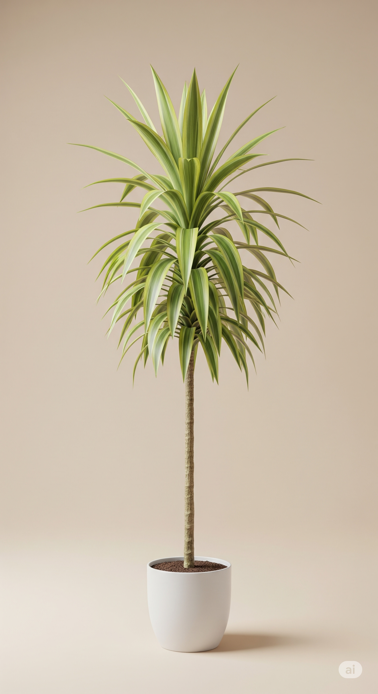

Dracena
Dracaena marginata
Toxicidade: ☠️ Tóxica para gatos
Luz: 🌤️ Luz indireta
Rega: 💧 Baixa
De fácil cuidado, a Dracena é comum em escritórios e residências por sua elegância tropical. Suas folhas arqueadas criam um visual leve e moderno.
Curiosidade: Quando cultivada ao ar livre, pode atingir até 3 metros de altura.
← Voltar para Plantas